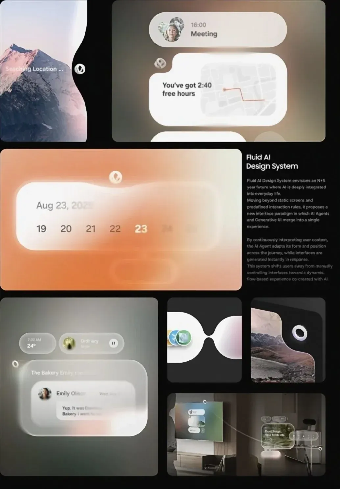

결국 애플 리퀴드글래스 UI 카카시 하는듯함.
플루이드 AI 디자인 이라는데, 빅스비도 떼버리고 갤럭시AI도 들어가는듯함.
한줄요약 : 역시 상급닌자 카피의 노때문

결국 애플 리퀴드글래스 UI 카카시 하는듯함.
플루이드 AI 디자인 이라는데, 빅스비도 떼버리고 갤럭시AI도 들어가는듯함.
한줄요약 : 역시 상급닌자 카피의 노때문
카카시 할거면 줮같은건 나두고 꼴리는거만 카카시 해오면 안될까 태문아
삼성도 독자적인 노선을 좀 구축하면 좋을건데, 카메라섬도 그렇고 매번 욕 먹을꺼 알면서 왜 따라하는걸까?
독자노선 구축했다가 더 욕먹을 것 같아서
갤럭시 s5
능력이 안되는거임
타이젠 os라고 혹시 아심? ㅋㅋㅋ
근데 의외로 애플같이 좀 해라라는 니즈도 많다고 람
애플은 삼성따라하고 삼성은 애플따라하고 진짜 미러전
아 저거 별론데
베터리엄청빨아먹는거아닌가몰라 ㅋㅋ
이거 10월인가에 시연영상으로 나온거 아님?
one ui 업뎃할때마다 병신임 좃병신들
뭐 별 병신같은걸 다 따라하네
저거 다 배터리 낭비라 애니메이션 효과도 끄고 쓰는데 배터리 용량부터 안전하게 늘리는게 우선 아닐까 태문아?
효율 따진답시고 원가절감을 그렇게 해대더니 초심을 잃은거니?
시발 배터리 효율성부터 좀 어케 해봐
존나별론데
갤럭시 유저들이 아이폰 얘기 나오면 항상 발작하는 이유가 있다니까 ㅋㅋ 애플은 깡패개새끼지만 갤럭시는 개새끼 동경하는 멸치문신남 같음 ㅋㅋㅋ
이쁘다
진짜 답이 없다 삼성은 그냥
이쁜데 빨리 업뎃 하고싶네 ㅋ
애플을 왜 따라함 자존심이 없음?
진성 앱빠입니다. 리퀴드글래스 자원만 존나 잡아먹고 예쁘지도 않아서 끄고 씁니다. 갤럭시는 왜 좆병신짓 하나요? 애플병신짓마저 따라하는건가요?
나도 한 앱등이 하는데 난 이뻐서 풀로 켜고 쓰는데 ㅋㅋㅋ
나도 ㅋㅋ 맘에 드는데
나도 리퀴드 별로던데. 뭔가 구별이 잘 안감
오 이쁜데??
로태문이 내보내고 다시 공돌이 앉혀놔 제발
리퀴드글래스 개별론데 아
iOS처럼, 초기 버전은 최적화 실패해서 JOAT될 확률이 높아 보이는데
이거 갤럭시 ai 구독제로 한다며 한달에 4천원씩 ㅅㅂ 월마다 가져가는 새끼들이 왜이렇게 많어
요즘은 얼음 냉장고도 구독 아님 못 사더라. 구독은 시발 렌탈하는 새끼들이 이름만 그럴싸해
뭐든 아이폰따라가는 버릇 좀 고첬으면
최근에 9.5 얘기하던데 벌써 10 얘기가 나옴?
아 저런거 따라하는 리소스 아깝다
더 좋은데 쓰일 수 있을 것 같은데
솔직히 안따라할수가 없지 애플 디자인이 표준이 되어버리는 현실인데 어캄 빨리 접목할수밖에
제발 배터리 숫자표시좀 없에게 해줰
뭐냐.. ㅋㅋ one ui 8.5 이후로 배터리 잔량 표시 끄는 기능을 없애버렸네 ㅋㅋ
저새끼들은 자꾸 저러면서 애플이랑 비비려고 하는게 걍 중국폰 딸치는거랑 똑같아보임
s26 그럼 버려지나여 적용되나여
내년 중후반쯤에 사사지절된 버전으로 해줄듯
태문아 제발 좆같은거좀 그만 가져오라고
이런건 카카시하는거인정인데 울트라 프로랑똑같이만든다고 베낀거보니까 존나이상함
따라한다고 너무 욕하지말자
독자적으로 어줍잖게 시도하는게 더 병신같더라
그래그래 정 자신없으면 정답 베껴야지
확실히 개드립은 갤럭시 유저가 90프로인듯
배터리 빨아먹는거나 고쳐봐 ㅡㅡ
지들도 주위에 잘나가는애잇으면 따라행동하면서
저거 싫어서 아이폰 버렸는데 저게 따라오네 ㅅㅂ
시발